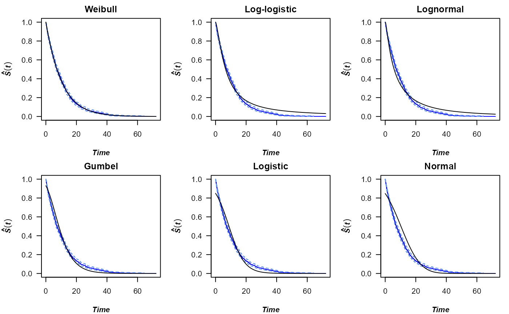
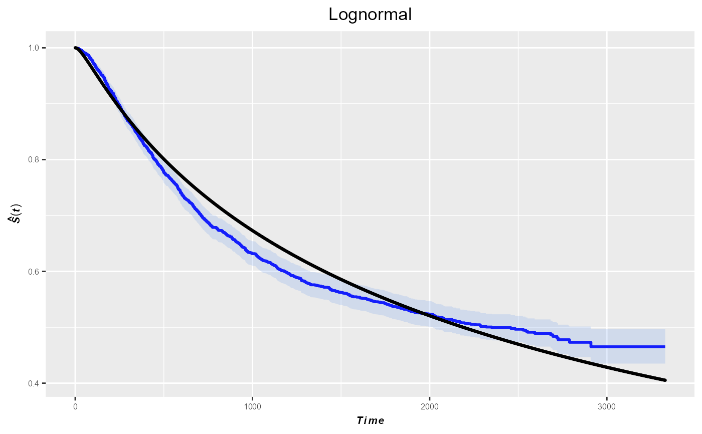
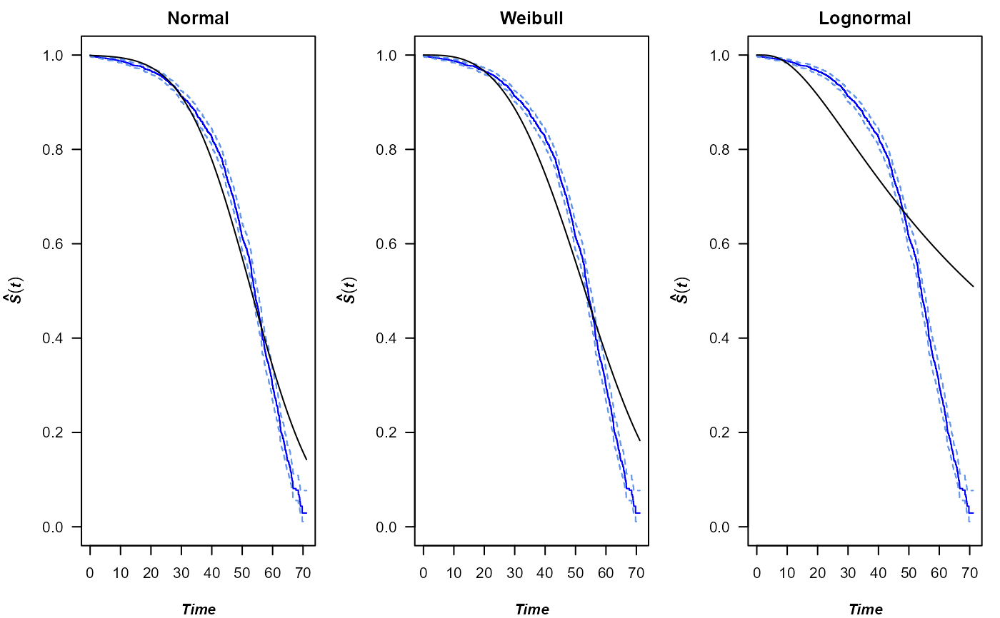

kmPlot.RdFunction kmPlot is a function that generates a plot that combines a
Kaplan-Meier survival curve and a parametric survival curve in the same graph.
It is useful for comparing non-parametric survival estimates with the fitted
parametric survival model.
# Default S3 method
kmPlot(times, cens = rep(1, length(times)), distr = "all6",
colour = c("black", "blue", "cornflowerblue"),
betaLimits = c(0, 1), igumb = c(10, 10), ggp = FALSE, m = NULL,
prnt = TRUE, degs = 3, print.AIC = TRUE, print.BIC = TRUE,...)
# S3 method for class 'formula'
kmPlot(formula, data, ...)Numeric vector of times until the event of interest.
Status indicator (1, exact time; 0, right-censored time). If not provided, all times are assumed to be exact.
A string specifying the name of the distribution to be studied.
The possible distributions are
the Weibull ("weibull"), the Gumbel ("gumbel"),
the normal ("normal"), the lognormal ("lognormal"),
the logistic ("logistic"), the loglogistic ("loglogistic"),
the exponential ("exponential")
and the beta ("beta") distribution. Default is "all6" and
includes the fisrt 6 listed which are the most used distributions.
Vector with three components indicating the colours of the displayed plots. The first element is for the survival curve, the second for the Kaplan-Meier curve, and the last one for the confidence intervals.
Two-components vector with the lower and upper bounds of the Beta distribution. This argument is only required, if the beta distribution is considered.
Two-components vector with the initial values for the estimation of the Gumbel distribution parameters.
Logical to use or not the ggplot2 package to draw the plots.
Default is FALSE.
Optional layout for the plots to be displayed.
Logical to indicate if the maximum likelihood estimates of the
parameters should be printed. Default is TRUE.
Integer indicating the number of decimal places of the numeric results of the output.
A formula with a numeric vector as response (which assumes no censoring) or Surv object.
Data frame for variables in formula.
Logical to indicate if the AIC of the model should be printed. Default is TRUE
Logical to indicate if the BIC of the model should be printed. Default is TRUE
Optional arguments for function par, if ggp = FALSE.
The parameter estimation is acomplished with the fitdistcens
function of the fitdistrplus package.
If prnt = TRUE, the following output is returned:
DistributionDistribution under study.
EstimatesA list with the maximum likelihood estimates of the parameters of all distributions considered.
StdErrorsVector containing the estimated standard errors.
aicThe Akaike information criterion.
bicThe so-called BIC or SBC (Schwarz Bayesian criterion).
In addition, a list with the same contents is returned invisibly.
Peterson Jr, Arthur V. Expressing the Kaplan-Meier estimator as a function of empirical subsurvival functions. In: Journal of the American Statistical Association 72.360a (1977): 854-858.
# Plots for complete data and default distributions
set.seed(123)
x <- rexp(1000, 0.1)
kmPlot(x)
#> Parameter estimates
#>
#> weibull
#> Shape (se): 1.014 (0.025)
#> Scale (se): 10.359 (0.34)
#> AIC: 6667.949
#> BIC: 6677.764
#>
#> loglogistic
#> Shape (se): 1.441 (0.038)
#> Scale (se): 6.597 (0.251)
#> AIC: 6808.804
#> BIC: 6818.619
#>
#> lognormal
#> Location (se): 1.764 (0.04)
#> Scale (se): 1.275 (0.029)
#> AIC: 6856.968
#> BIC: 6866.784
#>
#> gumbel
#> Location (se): 6.184 (0.209)
#> Scale (se): 6.332 (0.169)
#> AIC: 6994.971
#> BIC: 7004.786
#>
#> logistic
#> Location (se): 8.798 (0.275)
#> Scale (se): 5.076 (0.136)
#> AIC: 7307.124
#> BIC: 7316.94
#>
#> normal
#> Location (se): 10.3 (0.317)
#> Scale (se): 10.039 (0.224)
#> AIC: 7454.836
#> BIC: 7464.652
#>

# Plots for censored data using ggplot2
kmPlot(Surv(time, status) ~ 1, colon, distr= "lognormal", ggp = TRUE)
#> Parameter estimates
#>
#> lognormal
#> Location (se): 7.691 (0.05)
#> Scale (se): 1.748 (0.046)
#> AIC: 16445.98
#> BIC: 16457.04
#>

# Plots for censored data from three distributions
data(nba)
kmPlot(Surv(survtime, cens) ~ 1, nba, distr = c("normal", "weibull", "lognormal"),
prnt = FALSE)
